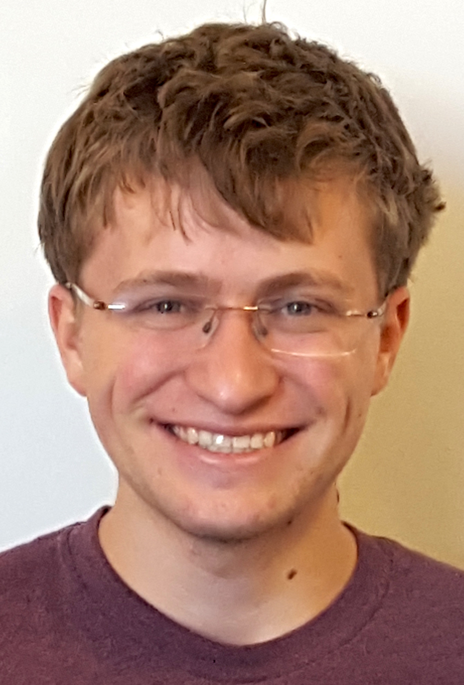

About Me

I recently graduated from Caltech where I was a student in the computer science option.
In the fall, I will begin a PhD with the Theory of Computing group at MIT.
I am broadly interested in the design and analysis of algorithms, especially in useful or unusual settings.
In the past, I have done research in several different fields, including information retrieval, computational biophysics, quantum computing, molecular programming, and causal inference.
At Caltech, I was
heavily
involved
in
student
government.
My CV is available.
Publications
-
Nicholas Schiefer and
Erik Winfree, “Time Complexity of Computation and Construction in the Chemical Reaction Network-Controlled Tile Assembly Model”,
to appear in the 22nd International Conference on DNA Computing and Molecular Programming
(DNA22),
2016.
Abstract
In isolation, chemical reaction networks and tile-based self-assembly are well-studied models of chemical computation. Previously, we introduced the chemical reaction network-controlled tile assembly model (CRN-TAM), in which a stochastic chemical reaction network can act as a non-local control and signalling system for a tile-based assembly system, and showed that the CRN-TAM can perform several tasks related to the simulation of Turing machines and construction of algorithmic shapes with lower program complexity than in either of its parent models. Here, we give a kinetic model for the CRN-TAM and investigate the time complexity of Turing-universal computation and construction of shapes. We analyze the time complexity of decision problems in the CRN-TAM, and show that decidable languages can be decided as efficiently by CRN- AM programs as on Turing machines and give a lower bound for the space-time complexity of CRN-TAM computation that rules out efficient parallel stack machines. We provide efficient parallel implementations of non-deterministic computations, showing among other things that the CRN-TAM can decide problems in NTIME(f(n)) ∩ coNTIME(f(n)) in O(f(n)) time with 1−ε probability if given exponential volume. Lastly, we provide basic mechanisms for parallel computations that share information and illustrate the limits of parallel computation in the CRN-TAM.
-
Nicholas Schiefer and
Erik Winfree, “Universal Computation and Optimal Construction in the Chemical Reaction Network-Controlled Tile Assembly Model”,
21st International Conference on DNA Computing and Molecular Programming
(DNA21),
2015,
Lecture Notes in Computer Science vol. 9211, pp. 34–54.
Abstract
Tile-based self-assembly and chemical reaction networks provide two well-studied models of scalable DNA-based computation. Although tile self-assembly provides a powerful framework for describing Turing-universal self-assembling systems, assembly logic in tile self-assembly is localized, so that only the nearby environment can affect the process of self-assembly. We introduce a new model of tile-based self-assembly in which a well-mixed chemical reaction network interacts with self-assembling tiles to exert non-local control on the self-assembly process. Through simulation of multi-stack machines, we demonstrate that this new model is efficiently Turing-universal, even when restricted to unbounded space in only one spatial dimension. Using a natural notion of program complexity, we also show that this new model can produce many complex shapes with programs of lower complexity. Most notably, we show that arbitrary connected shapes can be produced by a program with complexity bounded by the Kolmogorov complexity of the shape, without the large scale factor that is required for the analogous result in the abstract tile assembly model. These results suggest that controlled self-assembly provides additional algorithmic power over tile-only self-assembly, and that non-local control enhances our ability to perform computation and algorithmically self-assemble structures from small input programs.
Contact